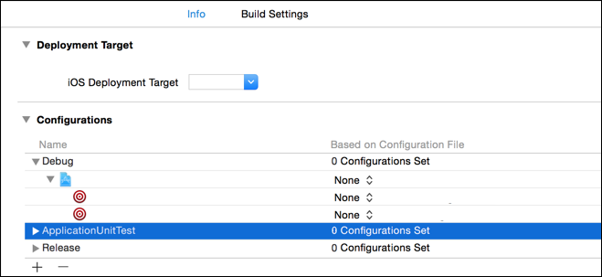

Cocoapods Warning - CocoaPods did not set the base configuration of your project because because your project already has a custom config set
After I execute a pod install at the base of my project, I get the following
error:
CocoaPods did not set the base configuration of your project because because your project already has a custom config set. In order for CocoaPods integration to work at all, please either set the base configurations of the target
BluePlaquesLondonFrameworktoPods/Target Support Files/Pods/Pods.debug.xcconfigor include thePods/Target Support Files/Pods/Pods.debug.xcconfigin your build configuration.
This probably sounds like a silly question, but how do I set the base configuration for a target?
https://github.com/seanoshea/BluePlaquesLondon/blob/ios8/Podfile is the Podfile which is causing this issue.
http://github.com/seanoshea/BluePlaquesLondon on the iOS 8 branch is the Podfile in question if you're curious to see what the project looks like.
Answer
I had the same problem, but in Xcode 6.1.1 - what fixed it for me was to
change the configuration file setting to None for the two Pods-related
targets, then run pod install again.
The configuration file setting is found by selecting the project (not the target) and then the Info tab.
Suggest
Don't tinker, Reset.
Step-by-step
- Show Project Navigator
- Select Project
- Select
Info - In Configurations , select each one, one at a time (Debug, ApplicationUnitTest, Release, etc.), and for each target within said configuration, set configuration to None.
- Make certain that Based on Configuration File reads 0 Configurations Set or No Configurations Set for each configuration. That is the crux. 
- Quit Xcode
rm -rf Pods/ Podfile.lock ; pod install
Once you have allowedpod install in step 7 to do its magic, you may be
able to use a custom config and change your configurations.